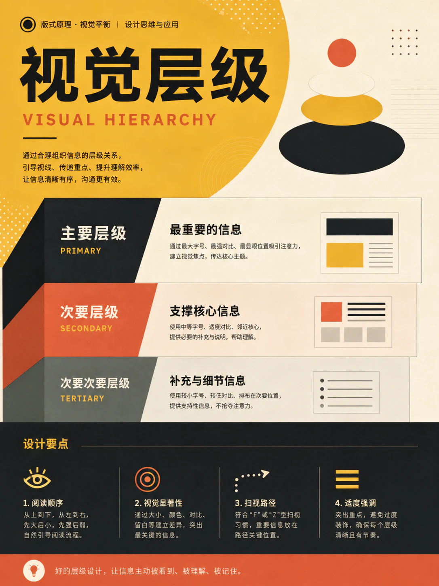

重点倒挂
1. 阅读顺序
从上到下，从左到右，先大后小，先强后弱，自然引导阅读流程。
VISUAL HIERARCHY
通过合理组织信息的层级关系，引导视线、传递重点、提升理解效率，让信息清晰有序，沟通更有效。
「票务注脚」反客为主，把核心主题压到后面
从上到下，从左到右，先大后小，先强后弱，自然引导阅读流程。
通过大小、颜色、对比、留白等建立差异，突出最关键的信息。
符合“F”或“Z”型扫视习惯，重要信息放在路径关键位置。
突出重点，避免过度装饰，确保每个层级清晰且有节奏。
THREE TIERS OF IMPORTANCE
打开一张内容丰富的版面，观者不会从左上角第一个字老老实实逐行读完——大脑先花一两秒评估「值不值得看」。把整页信息收敛成三个清晰阶梯，就是替观者把最重要的判断提前做好：
设计教育者艾伦·勒普顿在《字体的思考》（2004）里提醒：把信号拆成「图形线索（字号、字重、颜色）」与「空间线索（留白、缩进、位置）」，每一层挑 1–2 个干净信号就够，别把加粗、变色、加框、居中一股脑全叠在同一个标题上。
SIX PRE-ATTENTIVE LEVERS
海报第二条设计要点说：「通过大小、颜色、对比、留白等建立差异，突出最关键的信息。」为什么只要拉出一个清晰差值，眼睛连思考都不需要就能一秒看见？
心理学家安妮·特里斯曼与加里·格拉德在 1980 年发表的「特征整合理论」给出了底层机制：人眼处理画面分两步。第一步叫前注意阶段，视觉系统并行扫描整个视野里的单一显著特征（更大、更深、更暖、孤立在留白里），目标会自动「跳出来」（pop-out），找它几乎不随干扰物增多而变慢。
一旦页面里各种粗细、颜色、形状混在一起，目标需要组合好几个条件才能辨认，大脑就必须切进第二步聚焦注意阶段，像探照灯一样逐格排查——版面立刻显得累人。亲手点旁边的小测，就能量出两者真实的毫秒差距。
SCAN PATHS: F, Z & LAYER-CAKE
海报第三条要点写道：「符合“F”或“Z”型扫视习惯，重要信息放在路径关键位置。」 说多了一点
「F 型扫视」出自雅各布·尼尔森 2006 年对 232 名受试者的眼动研究：面对大段网页文字，人常横扫前两行，接着顺着左边栏匆匆往下滑。但到了 2017 年，尼尔森诺曼集团（NN/g）的卡拉·珀尼斯专门发文纠偏：F 型并不是值得照搬的理想版式模板，而是页面缺少清晰层级时，读者的无奈求生捷径。
一旦陷入 F 型扫视，页面右下方的大片信息会被直接忽略。好的视觉层级反而是要打破 F 型：用醒目的小标题与合理留白把长文切成清晰的层次，引导读者进入「千层糕式扫视」（Layer-Cake Scanning）——逐条扫过小标题，只在关心处深入阅读。至于 Z 型路径，则主要出现在信息稀疏、块面分明的海报或卡片首屏里。
WHERE VISUAL HIERARCHY CAME FROM
拉丁语 ruber 意为红色。面对密不透风的羊皮纸黑墨抄本，抄写员用朱红墨水抄写章节题纲，并绘制分级大小的首字母，在没有现代字号阶梯的时代最早立起了导读路标。
轮转印刷普及后，一份报纸要同时塞下几十条快讯。编辑发明了「通栏大标 + 副题 + 导语」的垂直阶梯，字号本身正式成为表达新闻轻重的视觉货币。
在柏林出版的 Die neue Typographie 向古典居中对称宣战，主张一切排布都应听从信息轻重——用不对称结构、字号骤变和粗黑几何杠把重点直接推到眼前。
瑞士巴塞尔学派代表作 Typographie 将层级从「大声喊叫」推进到冷静的系统方法：借网格栏线、字重序列、灰阶明度与留白比例稳稳控制阅读节奏。
特里斯曼与格拉德（1980）解释了前注意跳出机制，艾伦·勒普顿《字体的思考》（2004）整理出可教的排版线索，尼尔森诺曼集团（2006 / 2017）的眼动实测则让层级成为网页与手机端的核心骨架。
RESTRAINT & WHEN NOT TO USE
海报第四条要点反复叮嘱「适度强调」：突出重点的同时避免过度装饰。在真实改稿里，最常见的翻车不是忘了做层级，而是每个部门都要求「把我们这条也放大加红」——强调通胀一旦越过约 15%–20% 的经验边界，所有重点互相抵消，版面就退化成一片视觉噪音。
除了「拉太满会塌方」，还有四类场合本来就不该强分尊卑，反而要刻意保持均匀平权：
PRACTICE · ONE VARIABLE AT A TIME
ORIGINAL POSTER · NO. 095
